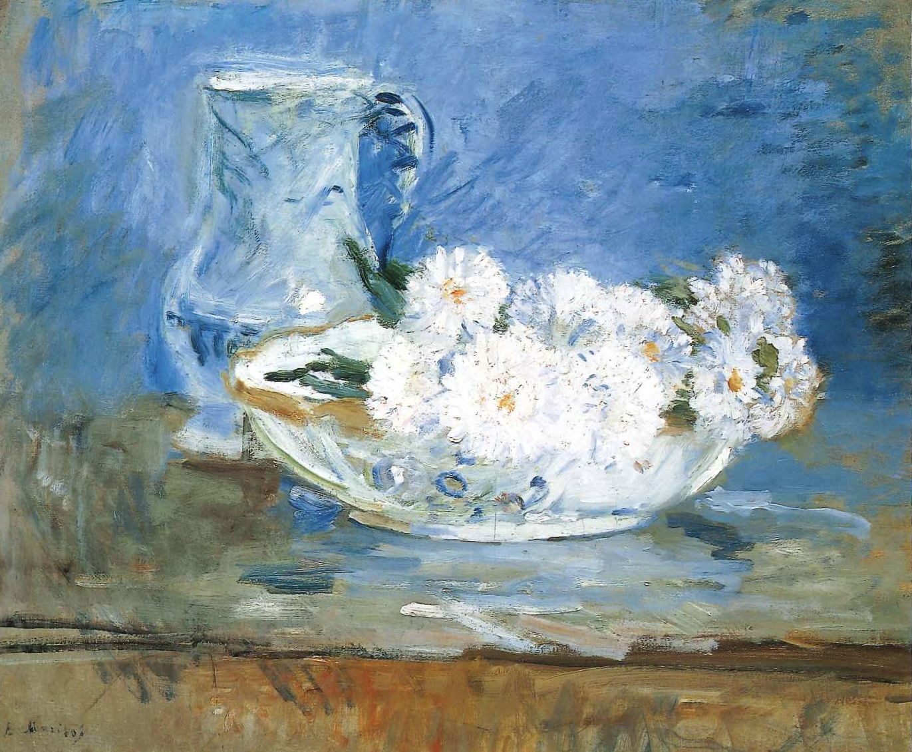

作品名 「鉢の中の白い花」
花言葉 「信じる恋」「変化」「追憶」「同感」
エゾギク
「信じる恋」
かつてはシオン属 Aster に分類されていたため、一般にアスターと呼ばれていますが、現在では1種だけでエゾギク属 Callistephus に分類されます。花言葉の「変化」は、エゾギクの多様な花色に由来するといわれます。「信じる恋」の花言葉は、古くはこの花が恋占い（「好き、嫌い、好き・・・」と花びらを一枚ずつ散らす）に使われていたことにちなむといわれます。
鉢の中の白い花
ベルト・モリゾ
ベルト・モリゾとは、エドゥアール・マネの絵画のモデルとしても知られる、19世紀印象派の画家です。非常に簡略な筆遣いで描かれたこの絵は、家庭や家族を中心に描いたモリゾにしては数少ない静物画であるが、彼女の様式をよく示す作品である。青と白を基調とする明るい画面は、人が何かを見る時の知覚の仕方に基づいて表現されている。人は細部ではなくまずはその対象全体の輪郭や景観を把握するものであり、それを絵に制作していく過程に応用している。
| 作品名 | 鉢の中の白い花 |
| 作者 | ベルト・モリゾ |
| 制作年 | 1885年 |
| 種類 | キャンバス・油彩 |
| 寸法 | 46cm × 55 cm |
| 所蔵 | ボストン美術館 |